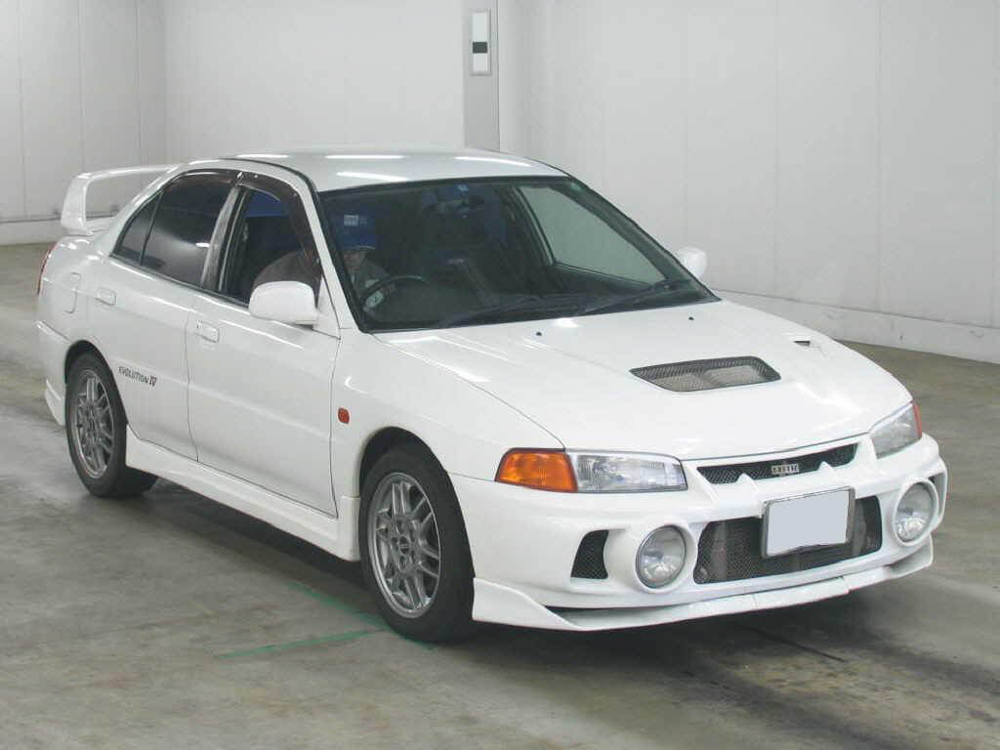

Initial D adalah sebuah seri manga yang bertema balapan paling populer dan termasuk salah satu manga favorit penulis. Saking populernya Initial D diadaptasikan menjadi anime dan terbukti meraih sukses besar. Bagi seorang car enthusiast sepertinya tidak asing dengan manga dan anime satu ini karena pengaruhnya yang besar dalam dunia otomotif.
Initial D identik dengan balapan ilegal di lereng gunung, drifting dan mobil-mobil pabrikan Jepang yang kencang, keren dan ikonik. Oleh karena itu mobil-mobil yang ada di Initial D sering menjadi incaran para car enthusiast, bahkan dimodif hingga benar-benar mirip seperti yang ada di anime.
Kalian pasti penasaran kan mobil apa saja sih yang muncul di Initial D?
Beberapa dari kalian mungkin hanya mengetahui beberapa saja terutama mobil yang digunakan sang tokoh utama yaitu Takumi Fujiwara. Nah, kali ini penulis akan membagikan 10 mobil yang digunakan untuk balapan di Initial D.
1. Honda Civic SiR-II (EG6)
Tahun : 1995
Pemilik : Shingo Soji
Warna : Milano Red
Mesin : Inline-4 DOHC B16A 1595cc
Drivetrain : FF/FWD
Aspiration : N/A (Naturally Aspirated)
Power : 170 HP (Stock) / 185 HP (Tuned by Shingo)
Transmisi : 5-Speed Manual
2. Mazda RX-7 Type R (FD3S)
Tahun : 1991
Pemilik : Keisuke Takahashi
Warna : Competition Yellow Mica
Mesin : Twin Rotor Rotary 13B-REW 654 cc x 2 (1308cc)
Drivetrain : FR/RWD
Aspiration : Twin Turbo
Power : 260 PS (Stock) / 450 PS (Tuned by Keisuke Takahashi)
Transmisi : 5-Speed Manual
3. Mitsubishi Lancer Evolution IV RS (CN9A)
Tahun : 1996
Pemilik : Seiji Iwaki
Warna : Scotia White
Mesin : Inline-4 DOHC 4G63T 1997cc
Drivetrain : 4WD
Aspiration : Turbo
Power : 276 HP (Stock) / 300 HP (Tuned by Seiji Iwaki)
Transmisi : 5-Speed Manual

4. Nissan Skyline GT-R V-Spec II Nur (BNR34)
Tahun : 2002
Pemilik : Kozo Hoshino
Warna : Millenium Jade Metallic
Mesin : Inline-6 DOHC RB26DETT 2568cc
Drivetrain : 4WD
Aspiration : Twin Turbo
Power : 276 HP (Stock) / 500 HP (Tuned by Kozo Hoshino)
Transmisi : 6-Speed Manual
5. Nissan Silvia K's (S13)
Tahun : 1988
Pemilik : Koichiro Iketani
Warna : Lime Green Two-Tone
Mesin : Inline-4 DOHC CA18DET 1809cc
Drivetrain : FR/RWD
Aspiration : Turbo
Power : 175 HP (Stock) / 200 HP (Tuned by Koichiro Iketani)
Transmisi : 5-Speed Manual
6. Subaru Impreza WRX STI Coupe Type R Version V (GC8)
Tahun : 1998
Pemilik : Bunta Fujiwara
Warna : Sonic Blue Mica
Mesin : Boxer-4 DOHC EJ20K 1994cc
Drivetrain : 4WD
Aspiration : Turbo
Power : 276 HP
Transmisi : 5-Speed Manual
7. Toyota Sprinter Trueno GT-APEX (AE86)
Tahun : 1983 (Zenki Model)
Pemilik : Takumi Fujiwara
Warna : High-Tech Two-Tone
Mesin : Inline-4 DOHC 4A-GEU 1587cc (Stock) / Inline-4 DOHC OEM 4A-GE 1587cc (Fujiwara Tofu Shop Version) / Inline-4 DOHC TRD Group A 4A-GELU 1587cc (Project D Version)
Drivetrain : FR/RWD
Aspiration : N/A (Naturally Aspirated)
Power : 125 HP (Stock) / 150 HP (Fujiwara Tofu Shop Version) / 240 HP (Project D Version)